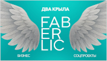
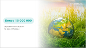
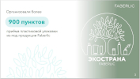
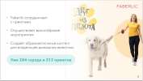
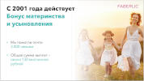
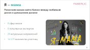
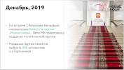
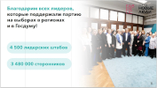
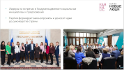
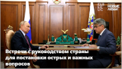
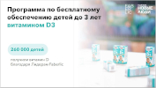
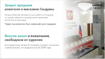
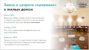
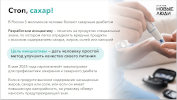
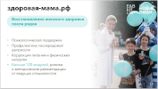
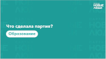
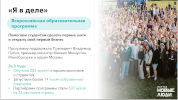
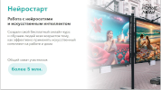
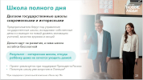
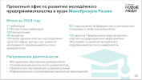
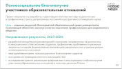
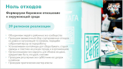
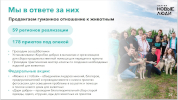
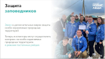
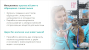
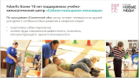
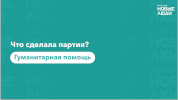
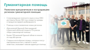
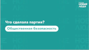
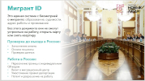
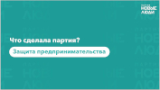
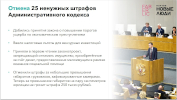
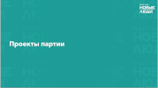
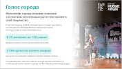
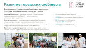
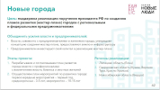
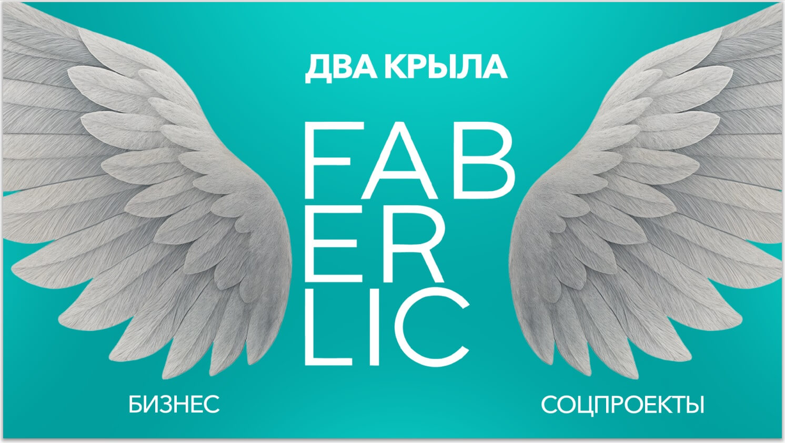
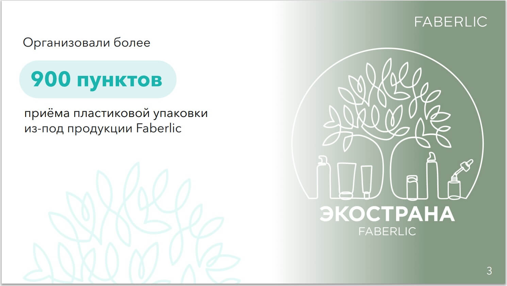
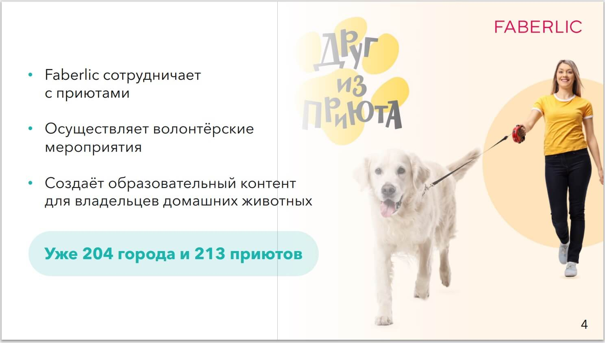
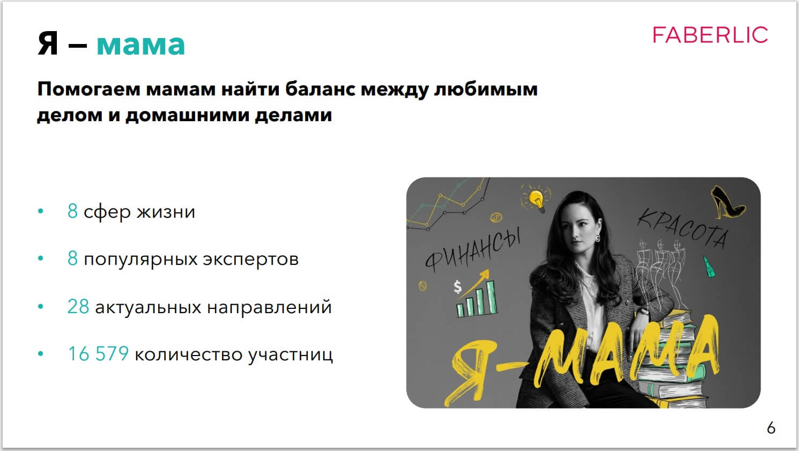
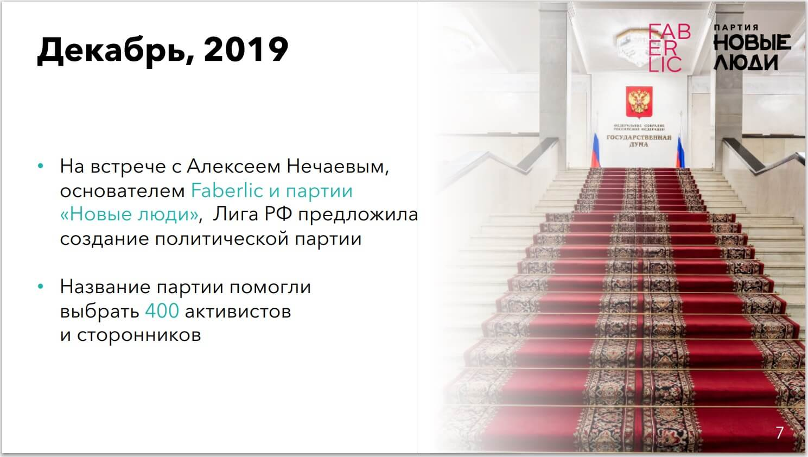
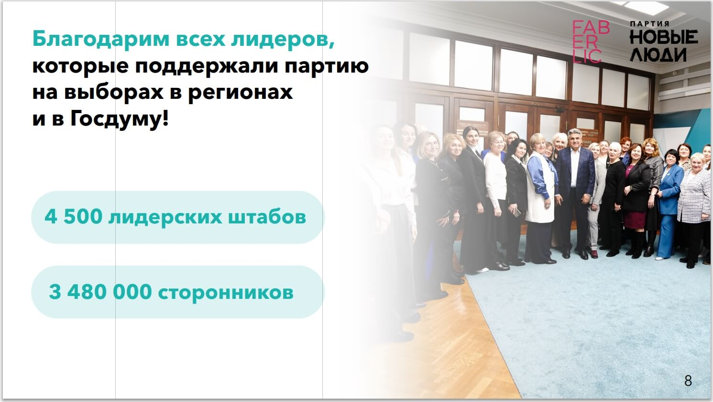
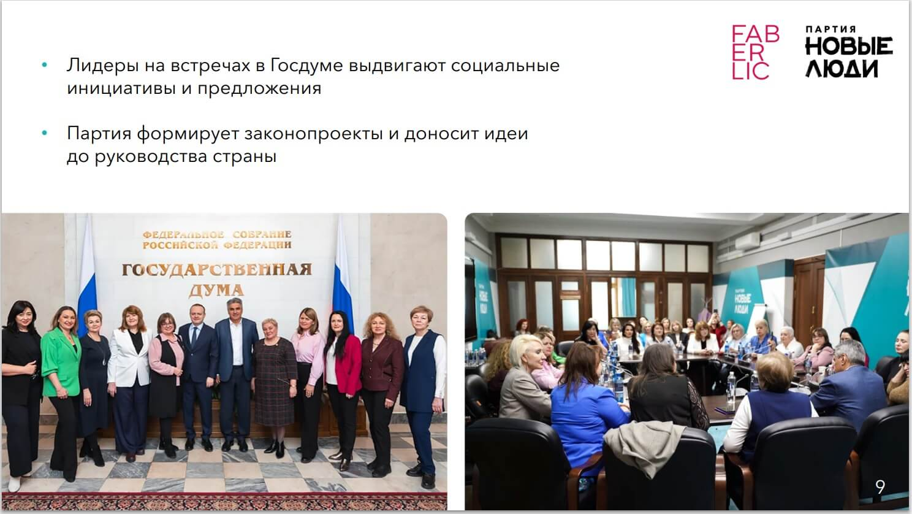
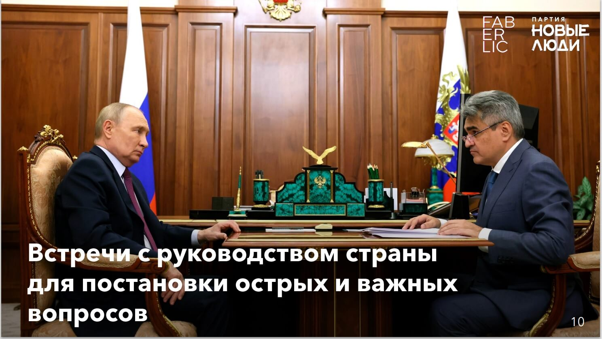
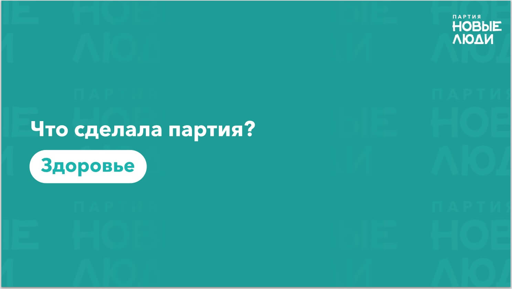
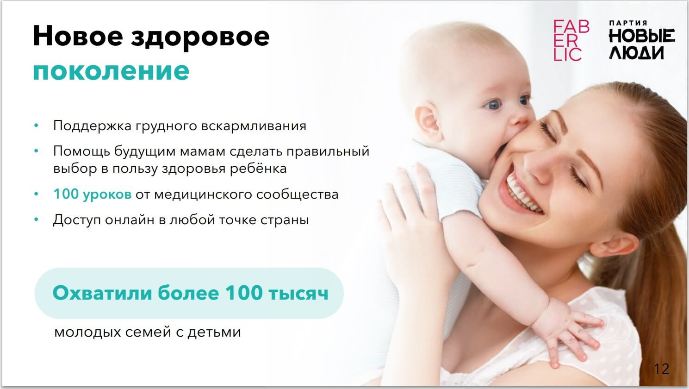
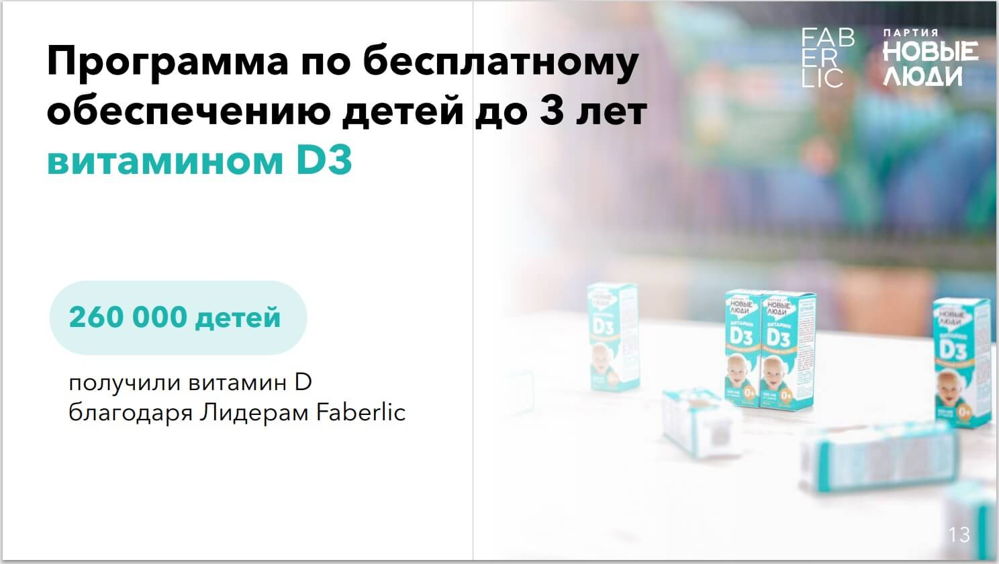
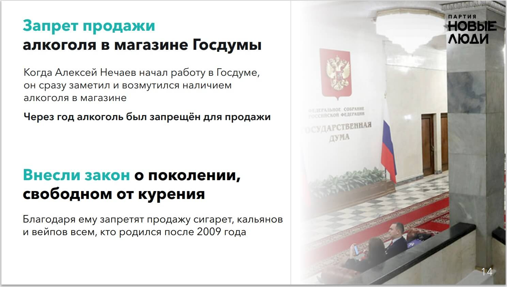
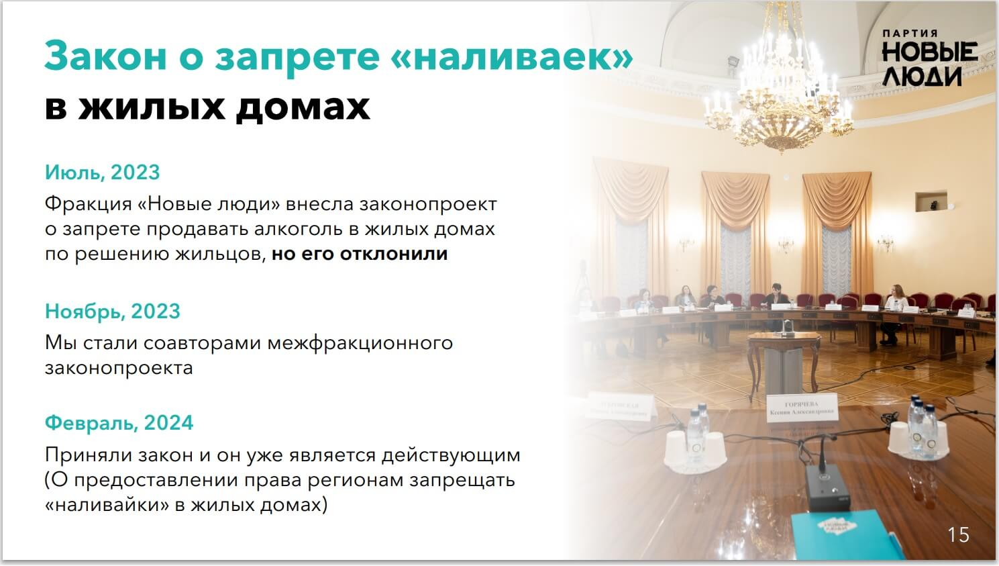
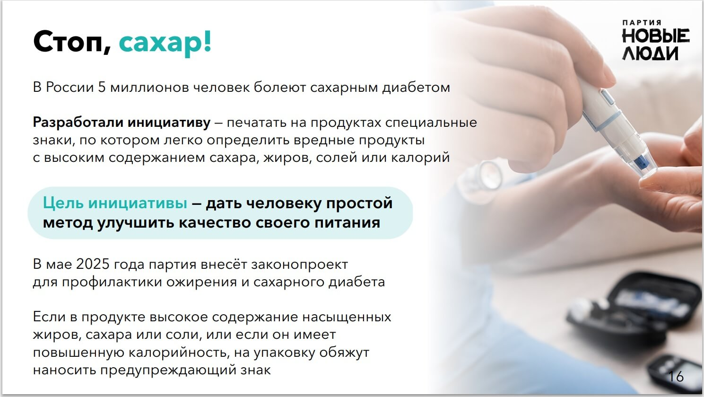
Программа партии «НОВЫЕ ЛЮДИ»
-
1. Доверие и достоинство — главный капитал страны.
Не нефть, не ракеты... ▼
Не нефть, не ракеты, не ВВП.
Экономисты давно доказали: благосостояние нации напрямую зависит от уровня доверия в обществе.
В России только 25% людей считают, что большинству можно доверять.
Это не приговор — это задача, которую можно решить.
Доверие возвращается, когда институты работают предсказуемо и справедливо. ▲К чему стремимся и что делаем:
Презумпция добросовестности... ▼
Презумпция добросовестности гражданина и бизнеса — не лозунг, а юридическая норма.
Бремя доказывания — всегда на стороне государственного органа.
Неустранимые противоречия в законах — всегда в пользу гражданина.
Уведомительный порядок вместо разрешительного — от открытия бизнеса до проведения публичного мероприятия.
Полный запрет на досудебную блокировку счетов граждан и бизнеса.
Материальная ответственность должностных лиц за ошибочные решения, причинившие ущерб гражданам. ▲ -
2. Регулирование интернета — умно, а не широко.
Интернет — это... ▼
Интернет — это рабочее место, источник дохода и пространство жизни для миллионов россиян.
Блоги, каналы, онлайн-магазины — это годы труда и вложений.
Ограничения в сети должны быть точечными и обоснованными, а не массовыми.
То, что реально угрожает безопасности — блокируется.
Всё остальное должно решаться иначе. ▲К чему стремимся и что делаем:
Пересмотр всех... ▼
Пересмотр всех действующих блокировок за последние 5 лет: то, что защищает граждан — остаётся; то, что не даёт результата — пересматривается.
Признание интернет-ресурсов — блогов, каналов, онлайн-магазинов — цифровым активом, равным по статусу физической собственности.
Ограничение доступа к ресурсу — только по решению суда и с правом владельца на компенсацию, если решение будет отменено.
Принцип соразмерности: если миллионы людей пользуются сервисом — значит, его нельзя отключить без серьёзных оснований и публичной процедуры. ▲ -
3. ИИ-суд — правосудие со скоростью технологий.
Судебная система... ▼
Судебная система перегружена.
Простые дела рассматриваются месяцами.
Технологии уже позволяют решать типовые споры быстрее, прозрачнее и дешевле.
Интернет-суды в мире уже работают — и показывают, что до 98% решений не обжалуется.
Это не замена правосудия — это его усиление. ▲К чему стремимся и что делаем:
Создание аккредитованных ИИ-судов... ▼
Создание аккредитованных ИИ-судов на базе крупнейших технологических платформ.
По гражданским и мелким экономическим спорам каждый гражданин получает право обратиться в ИИ-суд вместо обычного.
Стороны загружают документы, ИИ анализирует и выносит решение — без очередей, быстро, прозрачно.
С правом обжалования у живого судьи.
По экономическим делам ответчик получает право перенести дело в аккредитованный независимый арбитраж.
Три эффекта сразу: разгрузка судебной системы, скорость для граждан, повышение доверия к правосудию.
Традиционные суды остаются — но теперь у них появляется стимул работать лучше. ▲ -
4. Самозанятые, фрилансеры, стартаперы — вы и есть экономика.
Миллионы молодых россиян... ▼
Миллионы молодых россиян работают на себя — пишут код, снимают видео, делают дизайн, запускают онлайн-проекты.
Это не теневая экономика — это её будущее.
Но система до сих пор не воспринимает их всерьёз: банк не даёт ипотеку, потому что нет трудовой.
Платформа меняет условия в одностороннем порядке — и ты ничего не можешь сделать.
Болеешь — не получаешь ничего. ▲К чему стремимся и что делаем:
Признание дохода самозанятых... ▼
Признание дохода самозанятых и фрилансеров банками и госорганами наравне с зарплатой: ипотека, кредиты, визы — по фактическому доходу, а не по записи в трудовой книжке.
Добровольное социальное страхование для самозанятых: больничные, декретные, пенсионные отчисления — на понятных и доступных условиях, без принуждения.
Защита от платформ: маркетплейсы и агрегаторы не могут менять условия сотрудничества задним числом и без предупреждения.
Доступ самозанятых к госзаказам и грантам — наравне с юрлицами.
Налоговые каникулы на 3 года для технологических стартапов с выручкой до 30 млн рублей.
Государственный фонд софинансирования технологических проектов: ИИ, биотех, робототехника, энергетика — на каждый рубль частных инвестиций рубль от государства. ▲ -
5. Сильные регионы — сильная страна.
Молодёжь уезжает из... ▼
Молодёжь уезжает из родных городов не от нелюбви к ним — а потому что возможности сосредоточены в нескольких мегаполисах.
Настоящая федерация — это когда жить и строить карьеру можно в любом регионе. ▲К чему стремимся и что делаем:
Цифровой налог: платежи... ▼
Цифровой налог: платежи от онлайн-сервисов и маркетплейсов идут в бюджет региона, где совершена покупка, а не по месту регистрации компании.
Перераспределение налогов: основная часть остаётся в регионах, через центр — только доходы от природных ресурсов.
Переезд штаб-квартир госкомпаний в регионы.
Программа «Малая родина»: инфраструктура, спорт, культура, скоростной интернет в городах 50–300 тысяч — чтобы оставаться дома было не компромиссом, а нормальным выбором. ▲ -
6. Жильё — не роскошь, а старт.
Средняя квартира... ▼
Средняя квартира в крупном городе стоит 25–30 годовых зарплат.
Ипотека под двузначный процент.
Первый взнос, который нужно копить годами.
Для молодого специалиста или семьи покупка жилья — решение, определяющее всю жизнь.
Рядом с ипотекой должна появиться нормальная альтернатива — доступная аренда с перспективой. ▲К чему стремимся и что делаем:
Арендное жильё... ▼
Арендное жильё от государства: строительство доступных арендных домов для молодых специалистов до 35 лет и семей с детьми — по ценам на 40–50% ниже рынка, с правом выкупа через 10 лет.
Полный аудит тарифов ЖКХ: каждый житель видит, из чего складывается каждый рубль.
Результаты независимого аудита — онлайн.
Право свободно менять управляющую компанию и поставщика ресурсов — так же легко, как мобильного оператора.
Запрет на повышение тарифов выше инфляции без публичных слушаний. ▲ -
7. Образование — навыки, а не корочка.
Между тем, чему учат в школе... ▼
Между тем, чему учат в школе и вузе, и тем, что нужно на работе — всё ещё большой разрыв.
Выпускник, который не умеет ничего прикладного — это сигнал, что систему пора обновить.
России нужны инженеры, предприниматели, программисты, медики — а не конвейер дипломов. ▲К чему стремимся и что делаем:
С 5-го класса — программирование... ▼
С 5-го класса — программирование, основы права, медиаграмотность, критическое мышление.
Не факультативно — обязательно.
Старшая школа — реальная специализация с обязательной стажировкой на предприятии или в компании.
Программа «Студенческий старт»: оплачиваемая стажировка для каждого студента с третьего курса — реальная работа с зарплатой, а не практика ради галочки.
Зарплата учителя — не ниже 1,5 средних по региону.
Грантовая программа для молодых учёных и инженеров, остающихся работать в России: жильё, лаборатории, подъёмные. ▲ -
8. Семья — не демография, а люди.
Решение создать семью... ▼
Решение создать семью и родить ребёнка не должно быть финансовым подвигом.
Молодым семьям нужна не разовая выплата, а система, которая работает на каждом этапе — от беременности до школы. ▲К чему стремимся и что делаем:
Государственный алиментный фонд... ▼
Государственный алиментный фонд: если родитель не платит — государство платит за него и само взыскивает долг.
Ребёнок получает деньги всегда.
Закон о домашнем насилии с кризисными центрами и реальной ответственностью.
Льготная ипотека с 12-й недели беременности.
Автоматическая отсрочка по кредитам на 12 месяцев после рождения ребёнка.
Гарантированное место в яслях и детском саду — по праву, а не в очереди.
Сокращённый рабочий день для родителей детей до 3 лет — с компенсацией работодателю.
Доступная психологическая помощь через ОМС — без стигмы и без длительного ожидания.
Программа ментального здоровья в школах — чтобы ребёнок знал, что просить о помощи нормально. ▲ -
9. Социальная поддержка — быстро и без унижения.
Помощь должна приходить... ▼
Помощь должна приходить к тому, кому она нужна — быстро и просто.
Без десяти справок, без очереди, без ощущения, что ты кого-то о чём-то просишь.
Современные технологии позволяют это сделать. ▲К чему стремимся и что делаем:
Адресная социальная поддержка... ▼
Адресная социальная поддержка через цифровую платформу: помощь начисляется автоматически тем, кому положена — без бумажных справок и визитов в ведомства.
Поддержка людей с инвалидностью: доступная среда, рабочие места, сопровождение — на деле, а не на бумаге.
Бесплатные программы переквалификации для потерявших работу — с гарантированной стажировкой.
Минимальная пенсия — не ниже реального прожиточного минимума в регионе. ▲ -
10. Цены — конкуренция вместо монополий.
Когда на рынке три-четыре... ▼
Когда на рынке три-четыре крупных игрока — цены диктуют они, а не спрос и предложение.
Настоящее импортозамещение — это не запреты, а создание условий, при которых отечественные производители могут конкурировать и выигрывать. ▲К чему стремимся и что делаем:
Демонополизация ключевых рынков... ▼
Демонополизация ключевых рынков — продовольствие, стройматериалы, фармацевтика.
Реальное антимонопольное регулирование.
Льготные условия для фермеров и малых производителей на маркетплейсах — прямой доступ к покупателю без лишних посредников.
Дешёвые кредиты и инфраструктура для отечественных производителей — чтобы российский товар побеждал не потому что импортный запретили, а потому что он лучше и дешевле. ▲ -
11. Стабильные правила — основа развития.
Когда правила меняются... ▼
Когда правила меняются часто и непредсказуемо — страдают все: и бизнес, и обычные люди.
Предсказуемость — это не скука.
Это условие, при котором человек может планировать жизнь, а предприниматель — инвестировать. ▲К чему стремимся и что делаем:
Все новые ограничительные законы... ▼
Все новые ограничительные законы для граждан и бизнеса вступают в силу только через 2 года с момента принятия — чтобы общество успело оценить последствия и подготовиться.
Конституционный аудит: действующие законы и нормативные акты проверяются на соответствие правам граждан.
Всё, что противоречит — приводится в соответствие.
Декриминализация ненасильственных экономических нарушений: штрафы и компенсации вместо лишения свободы за то, что не несёт угрозы жизни.
Тюрьма — для тех, кто опасен.
Для остальных — цивилизованные инструменты. ▲ -
12. Россия, в которой хочется жить.
Мы хотим гордиться... ▼
Мы хотим гордиться своей страной — за качество жизни, за технологические достижения, за науку и культуру, за то, как Россия относится к своим гражданам.
Настоящее величие строится изнутри — когда талантливые люди хотят оставаться и создавать здесь. ▲К чему стремимся и что делаем:
Программа технологического суверенитета... ▼
Программа технологического суверенитета: собственные разработки в ИИ, микроэлектронике, биотехнологиях и космосе — через инвестиции и человеческий капитал.
Каждый рубль бюджета — в открытом доступе.
Все госзакупки и контракты — онлайн.
Прозрачность — лучший способ укрепить доверие к власти.
Цифровая платформа для гражданских инициатив: 100 000 подписей — парламент обязан рассмотреть.
Восстановление международных экономических связей: Россия — страна, с которой выгодно и интересно сотрудничать. ▲
Кто может стать Лидером Штаба (ЛШ)
Для участия в программе в качестве ЛШ необходимо соответствовать следующим требованиям:
- Быть гражданином РФ, достигшим возраста 18 лет, и старше.
- Проживать и быть зарегистрированным на территории, где проводится программа.
- Быть Активным Консультантом в любом статусе по маркетинговому плану (МП).
Основные задачи ЛШ
- 1. Регистрация: Зарегистрироваться на сайте программы по ссылке помощника Регионального Представителя.
- 2. Верификация: Подтвердить регистрационные данные, включая номер и внесение данных для Соглашения и Договора.
- 3. Набор команды «Торнадо»:
- Включить Координаторов (КР) в первую линию (не более 30 КР).
- Привлечь Сторонников (СТ) в первую линию.
- 4. Контроль верификации: Следить за процессом подтверждения статуса участников команды.
- 5. Организация активности: Участвовать во всех мероприятиях программы,
организовывать работу КР и контролировать голосование на выборах.
- Один ЛШ управляет несколькими КР, каждый из которых привлекает минимум одного СТ.
ДОХОД 1 ЛШ
Доход от привлеченных СТ:
- Каждый КР привлек 10 СТ.
- Всего: 5 КР × 10 СТ = 50 СТ
Доход рассчитывается по двумя составляющим:
1) За каждого СТ выплачивается 50 руб.:
50 СТ × 50 руб. = 2 500 руб.
2) Дополнительно, за лично привлеченных 10 СТ выплачивается повышенный тариф — 150 руб.:
10 СТ × 150 руб. = 1 500 руб.
Доход ЛШ может составить за 1 период:
2 500 + 1 500 = 4 000 руб.
____________________
За 6 периодов:
4 000 × 6 = 24 000 руб.
Дополнительный бонус
20 промокодов (как ЛШ) приносят по 500 руб.:
20 × 500 руб. = 10 000 руб.
5 промокодов за каждого СТ:
5 × 500 руб. = 2 500 руб.
Всего: 10 000 + 2 500 = 12 500 руб.
5 промокодов за каждого КР:
5 × 500 руб. = 2 500 руб.
Всего 5 КР, итого:
2 500 × 5 = 12 500 руб.
ИТОГО:
25 000 руб. - инвестиция от партии ПРОМО-КОДАМИ в наш бизнес Faberlic
Важные условия для получения бонуса промо-кодами
Определить основную территорию работы вне зависимости от места проживания(!).
Набрать команду, состоящую из КР и СТ на выбранной территории.
Бонус начисляется только в случае победы команды на выбранной территории.
Если команда действует на другой территории, ЛШ может регистрировать КР и СТ там, но бонус за «Торнадо» (дополнительное бонусное вознаграждение по итогам выборов) в этом случае не учитывается.
Итоговый расчет по дополнительному бонусу
Суммарный доход за 1 период составляет:
10 000 + 2 500 + 12 500 = 25 000 руб.
Это эквивалентно ≈ 277 баллам:
Расчет:
25 000/90 = 277,77 балла,
где 90 — усреднённая стоимость 1
балла
Общая сумма инвестиций партии для ЛШ в его бизнес Faberlic промо-кодами за 6 периодов (за 3,5 месяца) может составить:
25 000 × 6 = 150 000 руб.
Это эквивалентно ≈ 1662 баллам
ДОХОД 2 ЛШ
Этот вариант дохода отличается от первого варианта увеличенным числом привлечённых КР:
теперь их максимальное количество — 30, а не 5, как было рассмотрено в ДОХОДЕ 1
каждый КР привлекает 10 СТ
общее количество привлечённых СТ, таким образом, составляет:
30 КР × 10 СТ = 300 СТ
Детализация расчётов
Основная ставка вознаграждения за каждого СТ составляет 50 рублей:
300 СТ × 50 руб. = 15 000 руб.
Повышенная ставка вознаграждения действует за лично привлеченных 10 СТ:
10 СТ × 150 руб. = 1 500 руб.
Общая сумма дохода за 1 период равна:
15 000 + 1 500 = 16 500 руб.
____________________
За 6 периодов:
16 500 × 6 = 99 000 руб.
Дополнительный бонус
Дополнительные выплаты в виде промо-кодов:
Промо-коды, предоставляемые самому ЛШ:
20 промокодов × 500 руб. = 10 000 руб.
Промокоды за личное привлечение СТ:
5 промокодов × 500 руб. = 2 500 руб.
Промокоды за СТ, которого привлек КР:
5 промокодов × 500 руб. = 2 500 руб.
Всего за 30 КР:
2 500 × 30 = 75 000 руб.
Общий итоговый доход
16 500 + 10 000 + 2 500 + 75 000 = 87 500 руб.
Это — инвестиции промо-кодами от партии для ЛШ в его бизнес в Faberlic за 1 период.
≈ 972 балла за 1 период
Инвестиции промо-кодами от партии для ЛШ в его бизнес в Faberlic за 6 периодов:
87 500 × 6 = 525 000 руб.
≈ 5 833,33 балла за 6 периодов.
Бонусная программа
После проведения выборов для ЛШ предусмотрено получение БОНУСА в размере 50 000 рублей при выполнении определенных условий:
1. Команда ЛШ:
— должна включать минимум 10 активных КР*.
* Активный КР определяется как тот, кто привлек не менее 10
верифицированных СТ в течение всего периода «Торнадо» (с 27 апреля по 13
сентября).
* Активным КР может считаться сам ЛШ, если он привлек не менее 10 верифицированных СТ в течение всего периода «Торнадо».
2. Поддержка партии:
По итогам выборов на территории, выбранной ЛШ (привязанной при регистрации), партия должна набрать 8% и более голосов, чтобы участник получил бонус.
Бонус начисляется только ЛШ, чьи команды состоят из КР и СТ, зарегистрированных именно на территории ЛШ.
Варианты использования промо-кодов стоимостью 500 рублей для ЛШ
1. Активация неактивных консультантов в структуре
Использование промокодов для активации неактивных консультантов в своей структуре. Консультанты, которые долгое время не проявляли активности, могут быть мотивированы вернуться к участию в покупках и мероприятиях с помощью этих промо-кодов.
2. Неактивные новички
Промо-коды могут быть использованы для привлечения внимания новичков, которые пока не проявляют достаточной активности. Это помогает интегрировать их в работу команды и повысить их вовлечённость.
3. Промо-акции внутри команды
Проведение промо-акций внутри команды с использованием промо-кодов стимулирует конкуренцию и повышает общую продуктивность. Участники могут получать бонусы или привилегии за достижение определённых целей.
4. Рекрутинг (+)
Использование промо-кодов для рекрутинга позволяет привлекать новых консультантов в структуру. Плюс рядом с пунктом подчёркивает важность этого направления, так как увеличение числа участников является ключевым фактором роста.
5. Стимулирование КР
Последний пункт касается стимулирования КР. Промокоды могут быть использованы для поощрения наиболее активных и успешных КР, что способствует повышению их мотивации и лояльности.
Расчёт баллов для ЛШ
Детали расчёта:
1. Если 10 КР приглашают в период с 28 сентября по 11 октября по 10 НК с промокодом +1000 руб.:
— Каждый НК приносит ≈ 20 баллов.
— Всего:
10 КР × 10 НК × 20 баллов = 2000 баллов.
2. Если 20 КР приглашают в период с 28 сентября по 11 октября по 10 НК с промокодом +1000 руб.:
— Каждый НК приносит ≈ 20 баллов.
— Всего:
20 КР × 10 НК × 20 баллов = 4000 баллов.
Такой результат даёт статус «Директор».
3. Если 30 КР приглашают в период с 28 сентября по 11 октября по 10 НК с промокодом +1000 руб.:
— Каждый НК приносит ≈ 20 баллов.
— Всего:
30 КР × 10 НК × 20 баллов = 6000 баллов.
Такой результат даёт статус «Старший Директор».
Координатор (КР) «Движение 2026»
Период регистрации КР:
Регистрация КР осуществляется с 4 мая по 16 августа 2026 года.
Кто может стать КР:
1. Гражданство и возраст:
Участник должен быть гражданином РФ возрастом от 18 лет и старше.
2. Место проживания:
Проживать и быть зарегистрированным на территории проведения программы.
3. Опыт:
Желательно иметь опыт Активного Консультанта, Лидера Бизнес-Группы из структуры ЛШ, либо обслуживаться на Пункте Выдачи Заказов (ПВЗ) ЛШ.
Основные задачи КР
1. Регистрация:
Необходимо зарегистрироваться на сайте программы по ссылке, полученной от ЛШ (действует 72 часа).
2. Верификация:
Подтверждение регистрационного номера и внесение данных для заключения Соглашения и Договора.
3. Коммуникация:
Создание чата в мессенджере и приглашение сторонников (необходимо избегать блокировки мессенджера).
4. Набор сторонников (СТ):
Привлечение СТ для участия в выборах и голосовании за кандидата(-ов) партии.
5. Контроль:
Проверка верификации сторонников по телефону.
6. Участие в выборах:
Напоминать СТ о важности их голосования, информировать их о дне выборов.
7. Организация голосования:
Контролировать участие сторонников в голосовании.
8. Развитие:
Набирать новых членов Партии.
Доход КР
1. Период регистрации СТ:
Регистрация СТ проходит с 25 мая по 13 сентября, что составляет 112 дней.
2. Формула расчета дохода:
Доход рассчитывается по формуле:
Доход = (Количество человек/день) × (Оплата за человека/день) × (Количество дней)
Где:
— Оплата за одного человека в день составляет 150 рублей.
— Количество дней — 112.
3. Примеры расчетов:
— если регистрировать по 1 человеку в день:
1 × 150 × 112 = 16 800 рублей
— если регистрировать по 3 человека в день:
3 × 150 × 112 = 50 400 рублей
— если регистрировать по 5 человек в день:
5 × 150 × 112 = 84 000 рублей
— если регистрировать по 10 человек в день:
10 × 150 × 112 = 168 000 рублей
4. ВАЖНО:
Ограничений на количество привлеченных СТ нет, и доход зависит исключительно от усилий КР.
Чем больше СТ удастся привлечь ежедневно, тем выше будет итоговая сумма заработка!!!
Варианты использования промокодов стоимостью 500 рублей для КР
Промокоды предназначены для поддержки и мотивации КР в их работе.
Варианты использования промокодов:
1. Активизация неактивных консультантов в структуре:
— Этот вариант предполагает использование промокода для активации неактивных консультантов в структуре КР, если таковые имеются.
2. Активизация новичков:
— Здесь промокод можно использовать для активации новых консультантов, которые ранее не были активны или вообще не делали заказы на продукцию Faberlic.
3. Промо-акции внутри структуры:
— Промокоды могут применяться для проведения рекламных кампаний или специальных предложений внутри существующей структуры.
4. Рекрутинг:
— Использование промокодов для привлечения новых консультантов в структуру.
Дополнительный бонус для активных КР:
1. По итогам программы «Движение 2026»:
В период 14/2026 (с 28 сентября по 11 октября):
— КР становится участником «Акция 1000 руб.»:
дополнительно получает +1000 руб. за каждого нового Консультанта FABERLIC, сделавшего заказ от 2500 руб.
2. Условия «Акции 1000 руб.»:
Первая неделя (28.09-04.10):
Возможность неограниченной регистрации НК в первую линию (под себя) в FABERLIC с минимальным заказом от 2500 руб.
Вторая неделя (05.10-11.10):
Регистрация новых консультантов в глубину (через промокоды*) с минимальным заказом от 2500 руб.
________________________
* Количество промокодов соответствует количеству верифицированных сторонников, привлечённых за весь период программы «Торнадо».
ВАЖНО!!!
— «Акция 1000 руб.» распространяется на активных ЛШ и КР.
— Основной целью является привлечение НК в компанию FABERLIC с обозначенными минимальными заказами (от 2 500 руб.), что приносит дополнительный доход КР.